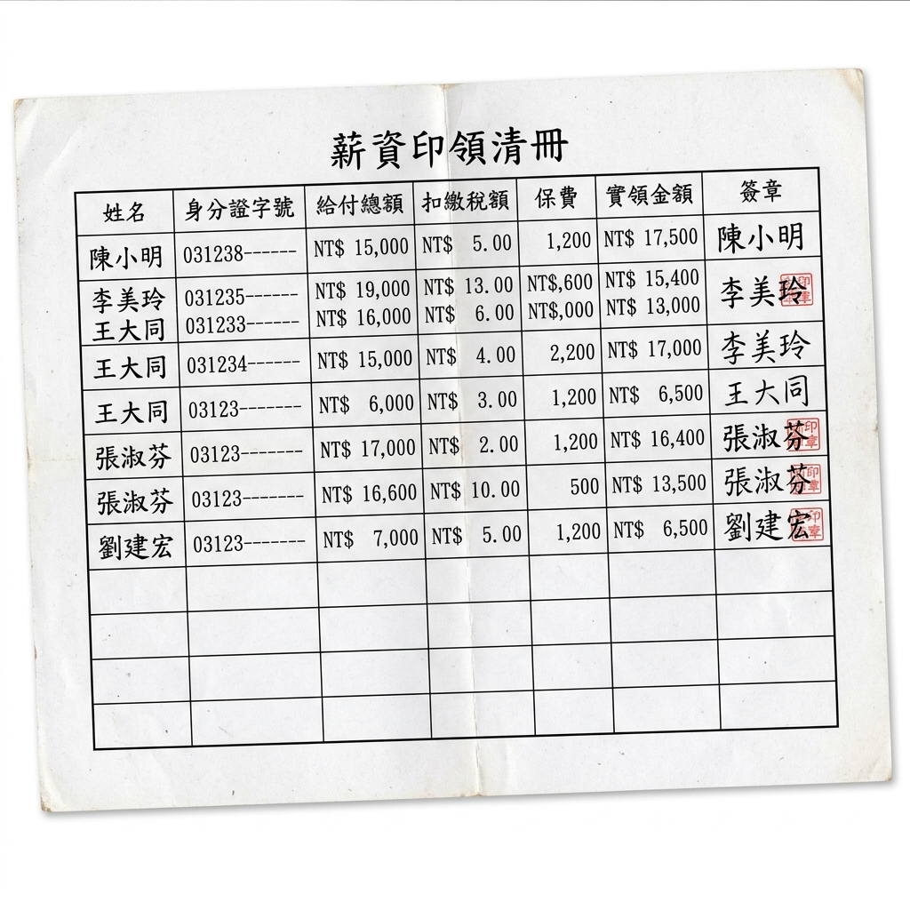

處理控制中心
處理進度追蹤
1
上傳會計大表
尚未載入資料檔
2
AI 科目語意對齊
待科目映射觸發
3
報表與底稿公式展開
待一鍵生成觸發
即時報表預覽區
AI 正在分析會計科目語意與數值...
請在左側面板載入範例大表以開始
紙本薪資印領清冊影像
請先載入示範紙本薪資印領清冊

AI 結構化資料提取結果
AI 正在對清冊進行表格定位與 OCR 解析...
點擊左側「執行 AI 掃描」以提取結構化表格資料
| 姓名 | 身分證字號 | 給付總額 | 扣繳稅額 | 保費/勞健保 | 實領金額 | 簽章狀態 |
|---|
POC 自動化運作原理解析
模組一：會計科目語意映射與報表生成
- 科目語意比對 (Semantic Mapping)：AI 讀取企業上傳的大表科目代號及名稱，運用語意向量（Embedding）技術，即使科目名稱非標準格式，也能正確映射至標準會計科目。
- 報表公式引擎 (Calculation engine)：將映射完成的科目金額，帶入預設的財報公式，自動產出「資產負債表 (BS)」與「損益表 (IS)」。
- 稅申報自動調整 (Tax Reconciliation)：根據台灣稅法，針對特定科目（如交際費限額、折舊年限差異等）在稅務申報時進行帳外調整，自動產生「營所稅計算底表」。
模組二：多模態視覺 AI 薪資清冊辨識
- 表格結構化偵測 (Table OCR)：利用 Multimodal LLM 偵測影像中的表格線，將傾斜或拍攝歪斜的圖片表格拉平，並解析對應的行、列邊界。
- 防呆算式檢驗 (Mathematical Audit)：AI 提取數據後，自動進行財務稽核算式檢驗：
給付總額 - 扣繳稅額 - 保費 = 實領金額。若數值不一致會即時標記警示（Amber/Red Badge）。 - 簽章智能偵測 (Signature Verification)：自動識別「簽章」欄位是否確實蓋有印章或手寫簽名，辨別有無漏簽情況。